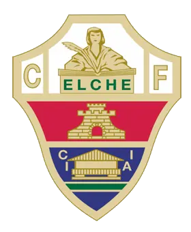

Real Oviedo
Real Oviedo6-3-5
victorias · empates · derrotas

Elche C.F.Historial del Real Oviedo contra Elche C.F.: 14 partidos (6 victorias, 3 empates, 5 derrotas, 19-18 en goles). Último enfrentamiento: Real Oviedo 1-2 Elche C.F. (26 abr 2026).
14Jugados
6Victorias
3Empates
5Derrotas
19Goles a favor
18Goles en contra
En casa: 7 partidos (3 victorias). Fuera: 7 partidos (3 victorias). Datos desde la temporada 2010/11.
Todos los partidos
-
26 abr 2026
2025/26 Real Oviedo – Elche C.F.Primera División · Jornada 32 1-2 -
21 sep 2025
2025/26 Elche C.F. – Real OviedoPrimera División · Jornada 5 1-0 -
14 mar 2025
2024/25 Real Oviedo – Elche C.F.Segunda División · Jornada 31 1-1 -
24 nov 2024
2024/25 Elche C.F. – Real OviedoSegunda División · Jornada 16 4-0 -
5 abr 2024
2023/24 Elche C.F. – Real OviedoSegunda División · Jornada 34 0-2 -
15 dic 2023
2023/24 Real Oviedo – Elche C.F.Segunda División · Jornada 20 3-2 -
20 jul 2020
2019/20 Elche C.F. – Real OviedoSegunda División · Jornada 42 2-1 -
15 sep 2019
2019/20 Real Oviedo – Elche C.F.Segunda División · Jornada 5 0-2 -
9 feb 2019
2018/19 Elche C.F. – Real OviedoSegunda División · Jornada 25 1-2 -
23 sep 2018
2018/19 Real Oviedo – Elche C.F.Segunda División · Jornada 6 1-1 -
10 jun 2017
2016/17 Elche C.F. – Real OviedoSegunda División · Jornada 42 0-2 -
14 ene 2017
2016/17 Real Oviedo – Elche C.F.Segunda División · Jornada 21 2-1 -
28 feb 2016
2015/16 Real Oviedo – Elche C.F.Segunda División · Jornada 27 3-0 -
27 sep 2015
2015/16 Elche C.F. – Real OviedoSegunda División · Jornada 6 1-1